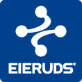
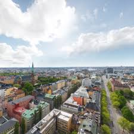
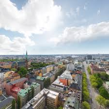

 


Eieruds Transports tjänster
Vi åtar oss alla slags transportuppdrag. Uppdrag så som paketleveranser, distributionsuppdrag samt frakt av partigods. Sedan april 2017 utför vi även transporter med grusbil. Eieruds Transport kan erbjuda lösningar för både engångstransporter samt långvariga transportuppdrag.
Kontakta oss för prisuppgifter och kundspecifika lösningar.
Kontakt